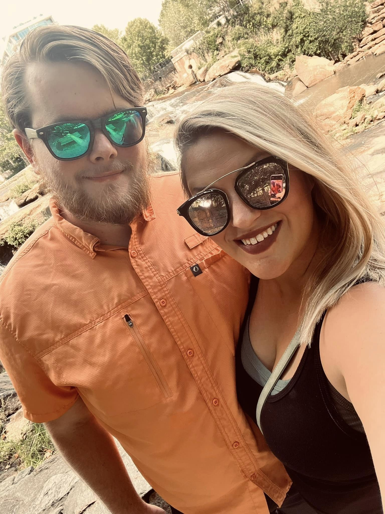

I am first and foremost a loving father and husband. My family consists of my wife, Cassandra Whitt and my five kids. Starting with the oldest Madeline Watts my stepdaughter, Alden Watts my stepson, Everleigh Whitt my daughter, Harleigh Whitt my daughter, and Cash Whitt my son.
I love being outdoors, there is just something about getting all those sun-rays and breathing that fresh air that is so invigorating. Having said that I enjoy camping, normally primitive camping but when the family is along I need to make sure they have some amenities like water and electric. At one point I even had a large 5th wheel camper that had a mid-bunk and was a whopping 41ft long. Only problem is I didn't have a lot of time to enjoy it, and it was a bit too much money at the time to use it like I wanted to. Then I switched jobs and took a pay cut to do it so the camper had to go.

I also do a lot of house projects and am very skilled at many trades. I actually enjoy doing the projects around the house mostly because of the amount of satisfaction I get when completing a project and learning a new skill and buying the occasional tool. At my old home in South Carolina I renovated the inside and outside to better suit our family. When I got the home it was a 2 bedroom 2 bath with gigantic closets and a garage. After I got done with it we turned it into essentially 5 bed 2 bath by closing in the garage and converting one of the giant closets into a bedroom with the Laundry room that was beside it. I also created a massive 750ft2 deck outside encompassing a 18ft pool. All of which I did with my own bare hands and a grumpy wife to help.

I want to be the best I can be at anything I do. I want to be the best father, the best husband, the best at my job. I want happiness and freedom what that looks like for me in a professional sense is that I want to be entrepreneurial. My professional aspirations is to run a short term rental business with my wife making some of the best and unique rental homes on AirBNB and VRBO. I also, want to start a tech company developing applications and websites for clients, though I am still working out in my head what that will look like. For my family I want to savor as much of this precious time I have with my kids and give them the experiences that I never had. My goal is to be remote working so I can take them traveling the great world.
If I seem like the guy to help make your vision come true give me a call. Or if you just want to hang out and chat I am an open book let's connect and talk.